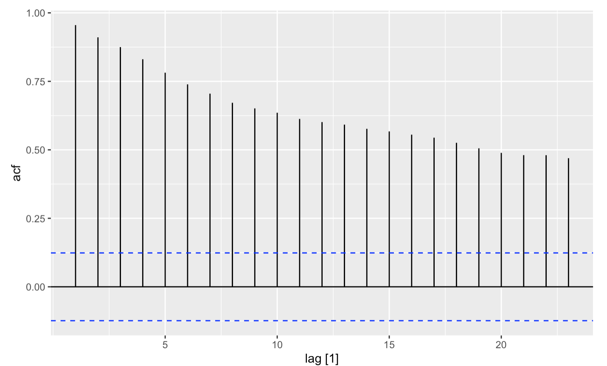
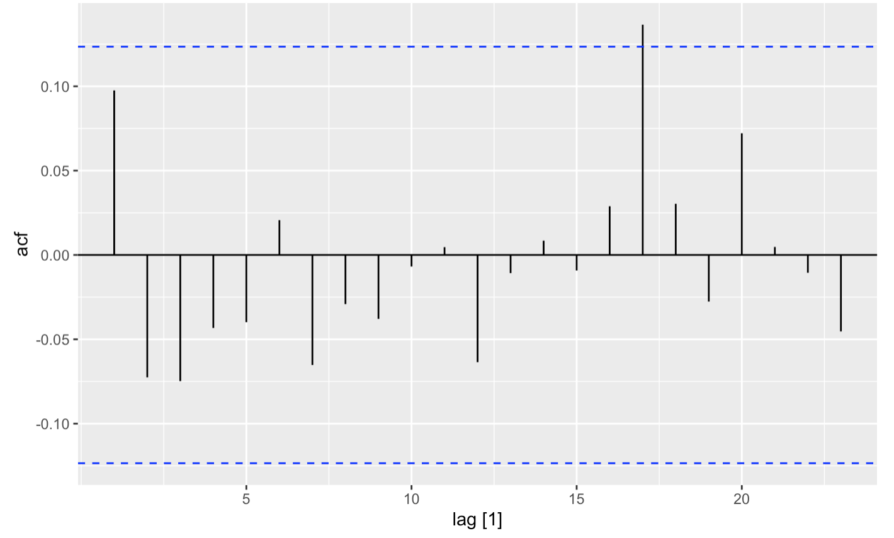
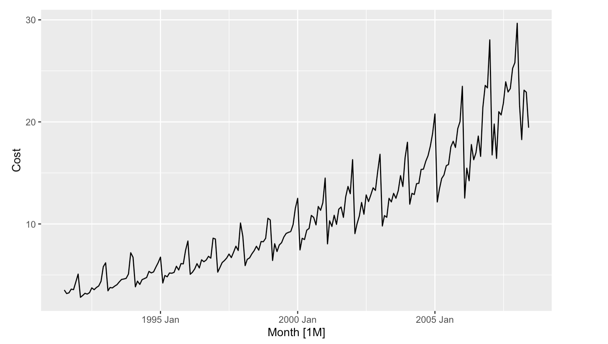
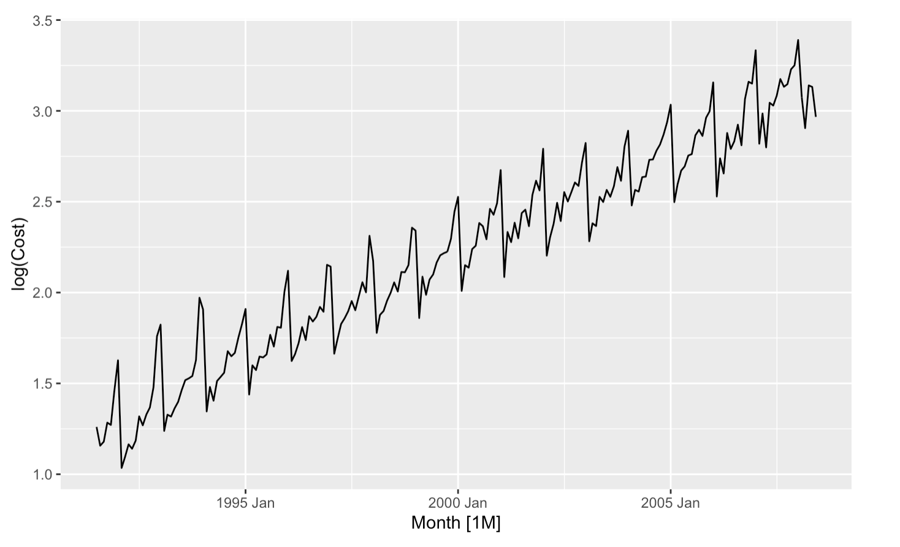
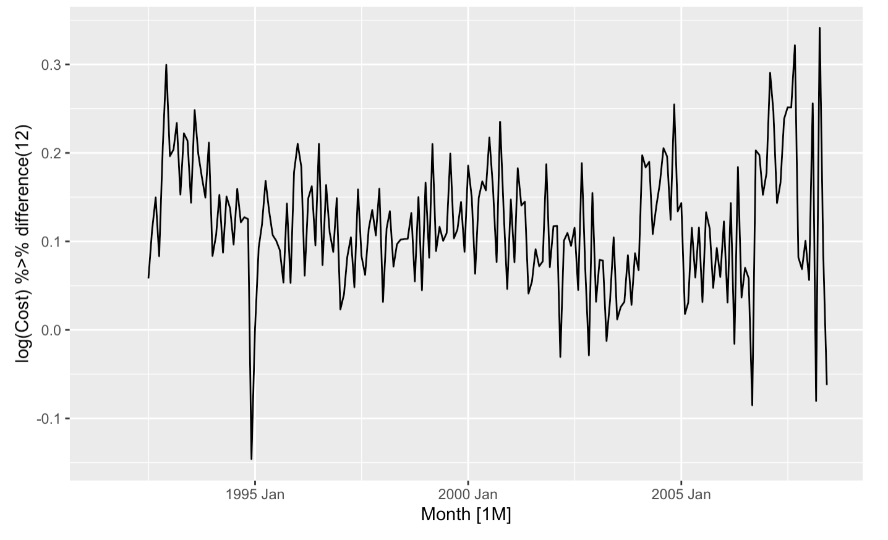
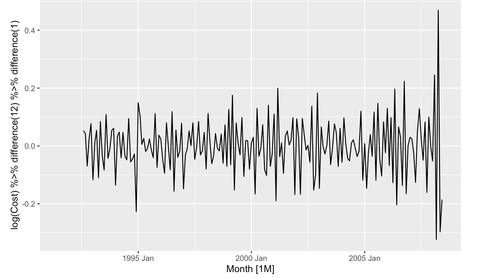
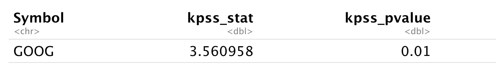
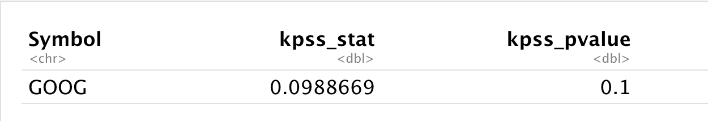

ARIMA Models¶
Introduction to Time Series Forecasting with Python. Jason Brownlee.
Forecasting: Principle and practice. Chapter 9. Rob Hyndman and George Athanasopoulos.
ARIMA (Autoregressive Integrated Moving Average Model) - a standard statistical model for time series forecast and analysis.
AR (Autoregression): Lagged observations as Input
A model uses the dependent relationship between an observation and some number of lagged observations
I (Integrated): The use of differencing to make the time series stationary
MA (Moving Average): Lagged errors as Input
A model uses the dependency between an observation and residual errors from a moving average model applied to lagged observations
ARIMA(p,d,q)
p: The number of lag observations included in the model (=lag order)
d: The number of times that the raw observations are differenced (=differencing degree)
q: The size of the moving average window (=moving average order)
Modeling Approach¶
Box-Jenkins Method - a 3-step iterative process for identifying, estimating, and checking models (proposed in 1970 by Box and Jenkins)
The process that generated the time series can be approximated using an ARMA model if it is stationary or an ARIMA model if it is non-stationary
Step 1. Model identification and model selection:
making sure that the variables are stationary,
identifying seasonality in the dependent series (seasonally differencing it if necessary),
using plots of the autocorrelation (ACF) and partial autocorrelation (PACF) functions of the dependent time series to decide which (if any) autoregressive or moving average component should be used in the model
Step 2. Parameter estimation:
using computation algorithms to arrive at coefficients that best fit the selected ARIMA model
the most common methods: maximum likelihood estimation or non-linear least-squares estimation
Step 3. Statistical model checking:
evaluating the fitted model and checking for areas where the model may be improved
the residuals should be independent of each other
the residuals should be constant in mean and variance over time
If the estimation is inadequate, return to step one to build a better model
Stationarity¶
Note
If (y_t) is a stationary time series, then for all s, the distribution of (y_t, … , y_(t+s)) does not depend on t.
Mean¶
How to identify non-stationarity in the mean?
The ACF of stationary data drops to zero relatively quickly
The ACF of non-stationary data decreases slowly
google_2015 <- gafa_stock %>%
filter(Symbol == "GOOG", year(Date) == 2015) %>%
mutate(trading_day = row_number()) %>%
update_tsibble(index = trading_day, regular = TRUE)
google_2015 %>%
autoplot(Close) +
labs(y = "Closing stock price ($USD)")
google_2015 %>% ACF(Close) %>% autoplot()
Note - a slow decrease in ACF: 
Differencing¶
Transformations such as logarithms can help to stabilise the variance of a time series - Differencing can help stabilise the mean of a time series by removing changes in the level of a time series, and eliminating (or reducing) trend and seasonality
Unit test to determine if differencing needed
google_2015 %>%
autoplot(difference(Close)) +
labs(y = "Change in Google closing stock price ($USD)")
google_2015 %>% ACF(difference(Close)) %>% autoplot()

Is it statistically significiant? p-value = 0.6 -> time series is stationary
google_2015 %>%
mutate(diff_close = difference(Close)) %>%
features(diff_close, ljung_box, lag = 10)
Seasonal Differencing
a10 <- PBS %>%
filter(ATC2 == "A10") %>%
summarise(Cost = sum(Cost)/1e6)
a10 %>% autoplot(Cost)

Log Transformation
a10 %>% autoplot(
log(Cost)
)

Applying seasonal differencing to Log Transformation: time series looks relatively stationary
a10 %>% autoplot(
log(Cost) %>% difference(12)
)

If the series is not stationary after seasonal differencing, another differencing can be applied
h02 <- PBS %>%
filter(ATC2 == "H02") %>%
summarise(Cost = sum(Cost)/1e6)
h02 %>% autoplot(
log(Cost) %>% difference(12) %>% difference(1)
)

Unit Test¶
Augmented Dickey Fuller test: null hypothesis is that the data are non-stationary and non-seasonal
Kwiatkowski-Phillips-Schmidt-Shin (KPSS) test: null hypothesis is that the data are stationary and non-seasonal
google_2015 %>%
features(Close, unitroot_kpss)
The p-value is less than 0.01, indicating that the null hypothesis is rejected and the data are not stationary. 
google_2015 %>%
mutate(diff_close = difference(Close)) %>%
features(diff_close, unitroot_kpss)
The p-value is greater than 0.1, indicating that we fail to reject the null hypothesis and the data is stationary. 